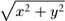

C++ Programming Robert Sedgewick - Princeton University Addison Wesley Professional Algorithms in C++, Parts 1–4: Fundamentals, Data Structure, Sorting, Searching, Third Edition
6.7. Sorting of Other Types of Data
Although it is reasonable to learn most algorithms by thinking of them as simply sorting arrays of numbers into numerical order or characters into alphabetical order, it is also worthwhile to recognize that the algorithms are largely independent of the type of items being sorted, and that is not difficult to move to a more general setting. We have talked in detail about breaking our programs into independent modules to implement data types, and abstract data types (see Chapters 3 and 4); in this section, we consider ways in which we can apply the concepts discussed there to build implementations, interfaces, and client programs for sorting algorithms. Specifically, we consider interfaces for:
Program 6.6. Sort driver for arrays|
This driver for basic array sorts uses three explicit interfaces: the first for a data type that encapsulates the operations that we perform on generic items; the second for the slightly higher level exch and compexch functions used by our sort implementations; and the third for the functions that initialize and print (and sort!) arrays. Breaking our driver into modules in this way allows us to use each sort implementation to sort various types of data without any modification, to share the exchange and compare-exchange implementations, and to compile the functions for arrays separately (perhaps for use in other drivers).
#include <stdlib.h>
#include "Item.h"
#include "exch.h"
#include "Array.h"
main(int argc, char *argv[])
{ int N = atoi(argv[1]), sw = atoi(argv[2]);
Item *a = new Item[N];
if (sw) rand(a, N); else scan(a, N);
sort(a, 0, N-1);
show(a, 0, N-1);
}
|
The item data type provides us with a way to use our sort code for any type of data for which certain basic operations are defined. The approach is effective both for simple data types and for abstract data types, and we shall consider numerous implementations. The array interface is less critical to our mission; we include it to give us an example of a mutiple-module program that uses multiple data types. We consider just one (straightforward) implementation of the array interface.
Program 6.6 is a client program with the same general functionality of the main program in Program 6.1, but with the code for manipulating arrays and items encapsulated in separate modules. This gives us, in particular, the ability to test various sort programs on various different types of data, by substituting various different modules, but without changing the client program at all. Program 6.6 also refers to an interface for the exch and compexch operations used by our sort implementations. We might insist that these be included with the Item.h interface, but the implementations in Program 6.1 serve our purposes with well-understood semantics when assignment and operator< are defined, so it is simpler to keep them in a single module where they can be used by all our sort implementations for all our item data types. To complete the implementation, we need to define the array and item data type interfaces precisely, then provide implementations.
Program 6.7. Interface for array data type|
This Array.h interface defines high-level functions for arrays of abstract items: initialize random values, initialize values read from standard input, print the contents, and sort the contents.
template <class Item>
void rand(Item a[], int N);
template <class Item>
void scan(Item a[], int &N);
template <class Item>
void show(Item a[], int l, int r);
template <class Item>
void sort(Item a[], int l, int r);
|
The interface in Program 6.7 defines examples of high-level operations that we might want to perform on arrays. We want to be able to initialize an array with key values, either randomly or from the standard input; we want to be able to sort the entries (of course!); and we want to be able to print out the contents. These are but a few examples; in a particular application, we might want to define various other operations (the Vector class in the Standard Template Library is one approach to providing a general interface of this kind). Using Program 6.7 allows us to substitute different implementations of the various operations without having to change the client program that uses the interface—main in Program 6.6, in this case. The various sort implementations that we are studying can serve as implementations for the sort function. Program 6.8 has simple implementations for the other functions. The modular organization allows us to substitute other implementations, depending on the application. For example, we might use an implementation of show that prints out only part of the array when testing sorts on huge arrays.
Program 6.8. Implementation of array data type|
This code provides implementations of the functions defined in Program 6.7, using the item types and basic functions for processing them that are defined in a separate interface (see Program 6.9).
#include <iostream.h>
#include <stdlib.h>
#include "Array.h"
template <class Item>
void rand(Item a[], int N)
{ for (int i = 0; i < N; i++) rand(a[i]); }
template <class Item>
void scan(Item a[], int &N)
{ for (int i = 0; i < N; i++)
if (!scan(a[i])) break;
N = i;
}
template <class Item>
void show(Item a[], int l, int r)
{ for (int i = l; i <=r; i++)
show(a[i]);
cout << endl;
}
|
In a similar manner, to work with particular types of items and keys, we define their types and declare all the relevant operations on them in an explicit interface, then provide implementations of the operations defined in the item interface. For example, consider an accounting application, where we might have a key corresponding to a customer's account number and a floating-point number corresponding to that customer's account balance. Program 6.9 is an example of an interface that defines a data type for such an application. The interface code declares the < operation that we need to compare keys, as well as functions to generate a random key, to read a key, and to print out the value of a key. Program 6.10 has implementations of these functions for this simple example. Clearly, we can tailor such implementations to specific applications. For example, Item could be an ADT defined as a C++ class, and a key could be a member function of a class object, rather than a data member of a structure. We shall consider such an ADT in Chapter 12.
Program 6.9. Sample interface for item data type|
The file Item.h that is included in Program 6.9 defines the data type for the items to be sorted. In this example, the items are small records consisting of integer keys and associated floating-point information. We declare that the overloaded operator< will be implemented separately, as will the three functions scan (read an Item into its argument), rand (store a random Item in its argument), and show (print an Item).
typedef struct record { int key; float info;} Item;
int operator<(const Item&, const Item&);
int scan(Item&);
void rand(Item&);
void show(const Item&);
|
Programs 6.6 through 6.10 together with any of the sorting routines as is in Sections 6.2 through 6.6 provide a test of the sort for our small records. By providing similar interfaces and implementations for other types of data, we can put our sorts to use for a variety of data—such as complex numbers (see Exercise 6.50), vectors (see Exercise 6.55), or polynomials (see Exercise 6.56)—without changing the sort code at all. For more complicated types of items, the interfaces and implementations have to be more complicated, but this implementation work is completely separated from the algorithm-design questions that we have been considering. We can use these same mechanisms with most of the sorting methods that we consider in this chapter and with those that we shall study in Chapters 7 through 9, as well. We consider in detail one important exception in Section 6.10—it leads to a whole family of important sorting algorithms that have to be packaged differently, the subject of Chapter 10.
The approach that we have discussed in this section is a middle road between Program 6.1 and an industrial-strength fully abstract set of implementations complete with error checking, memory management, and even more general capabilities. Packaging issues of this sort are of increasing importance in some modern programming and applications environments. We will necessarily leave some questions unanswered. Our primary purpose is to demonstrate, through the relatively simple mechanisms that we have examined, that the sorting implementations that we are studying are widely applicable.
Program 6.10. Sample implementation for item data type|
This code implements the overloaded operator< and the functions scan, rand, and show that are declared in Program 6.9. Since the records are small structures, we can have exch use the built-in assignment operator without undue worry about the expense of copying items.
#include <iostream.h>
#include <stdlib.h>
#include "Item.h"
int operator<(const Item& A, const Item& B)
{ return A.key < B.key;}
int scan(Item& x)
{ return (cin >> x.key >> x.info) != 0; }
void rand(Item& x)
{ x.key = 1000*(1.0*rand()/RAND_MAX);
x.info = 1.0*rand()/RAND_MAX; }
void show(const Item& x)
{ cout << x.key << " " << x.info << endl; }
|
Exercises | 6.49 Write versions of Programs 6.9 and 6.10) that overload operator<< and operator>> rather than using scan and show, and modify Program 6.8 to use your interface. | | 6.50 Write an interface and implementation for the generic item data type to support having the sorting methods sort complex numbers x + iy using the magnitude for the key. Note: Ignoring the square root is likely to improve efficiency. | |  6.51 Write an interface that defines a first-class abstract data type for generic items (see Section 4.8), and provide an implementation where the items are complex numbers, as in the previous exercise. Test your program with Programs 6.3 and 6.6. 6.51 Write an interface that defines a first-class abstract data type for generic items (see Section 4.8), and provide an implementation where the items are complex numbers, as in the previous exercise. Test your program with Programs 6.3 and 6.6.
| | | |  6.52 Add a function check to the array data type in Programs 6.8 and 6.7, which tests whether or not the array is in sorted order. 6.52 Add a function check to the array data type in Programs 6.8 and 6.7, which tests whether or not the array is in sorted order.
| |  6.53 Add a function testinit to the array data type in Programs 6.8 and 6.7, which generates test data according to distributions similar to those illustrated in Figure 6.13. Provide an integer argument for the client to use to specify the distribution. 6.53 Add a function testinit to the array data type in Programs 6.8 and 6.7, which generates test data according to distributions similar to those illustrated in Figure 6.13. Provide an integer argument for the client to use to specify the distribution.
| | 6.54 Change Programs 6.7 and 6.8 to implement an abstract data type. (Your implementation should allocate and maintain the array, as in our implementations for stacks and queues in Chapter 3.) | | 6.55 Write an interface and implementation for the generic item data type for use in having the sorting methods sort multidimensional vectors of d integers, putting the vectors in order by first component, those with equal first component in order by second component, those with equal first and second components in order by third component, and so forth. | | 6.56 Write an interface and implementation for the generic item data type for use in having the sorting methods sort polynomials (see Section 4.9). Part of your task is to define an appropriate ordering. |
|